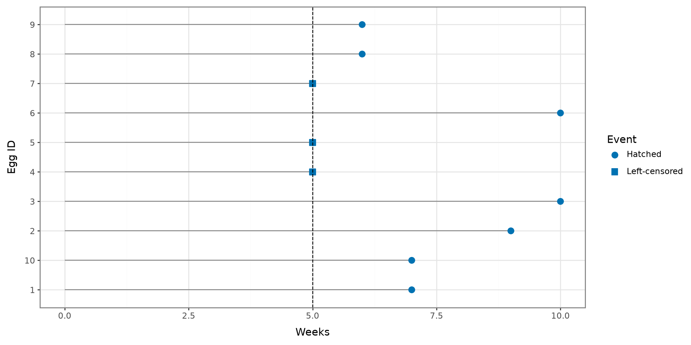
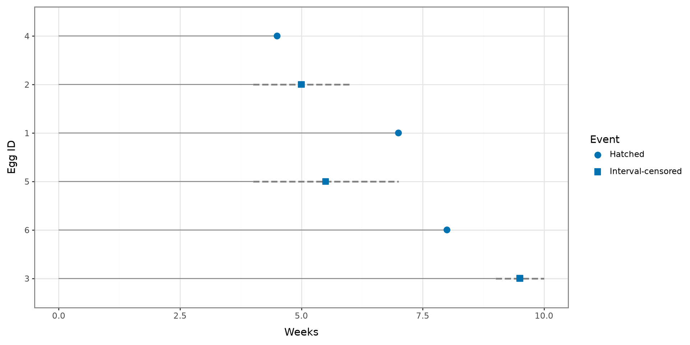
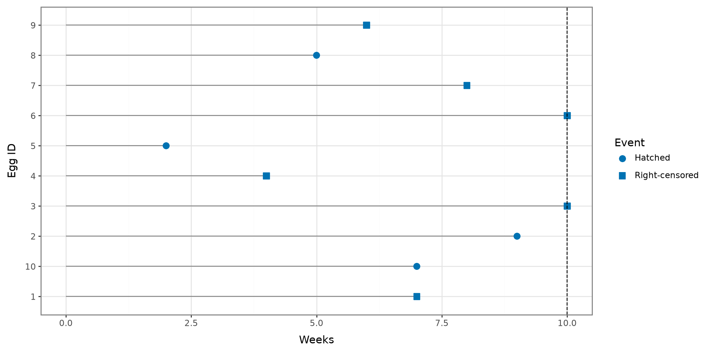
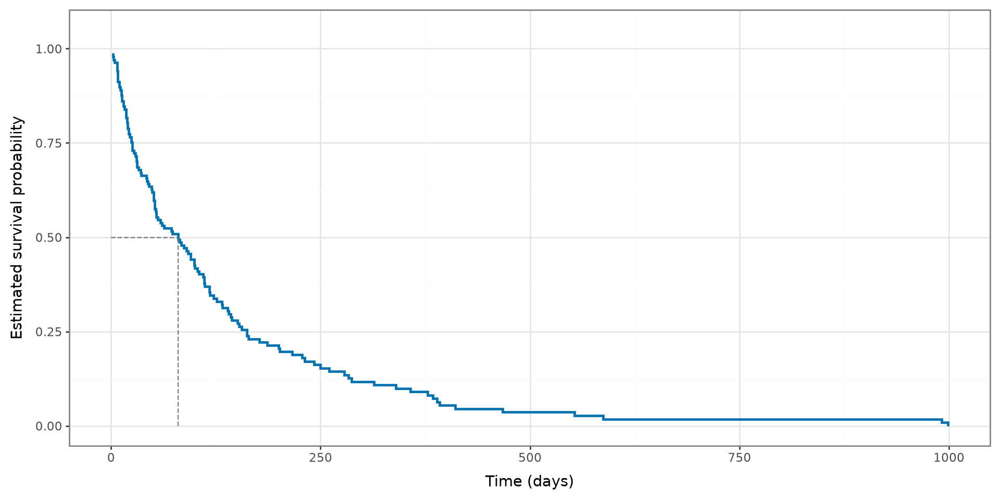
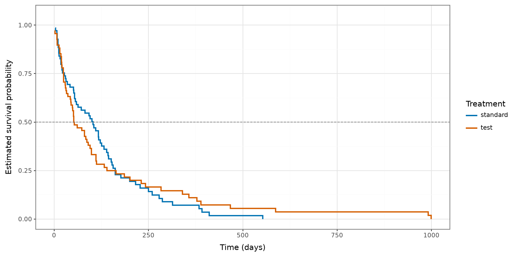
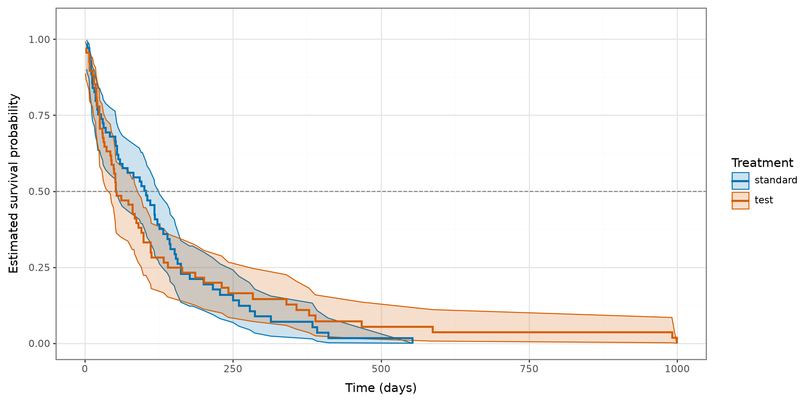
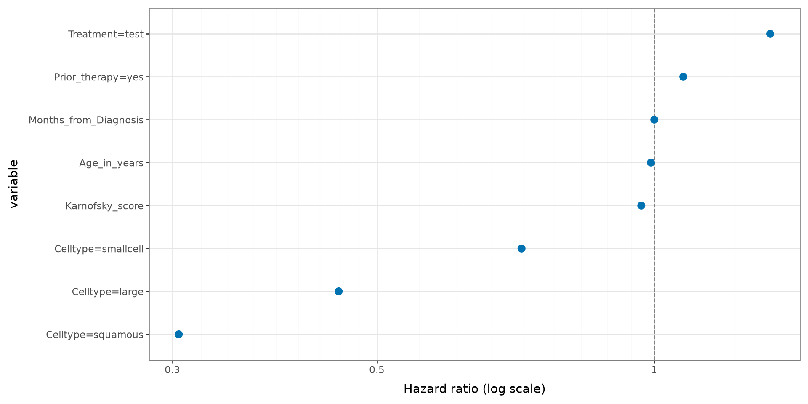
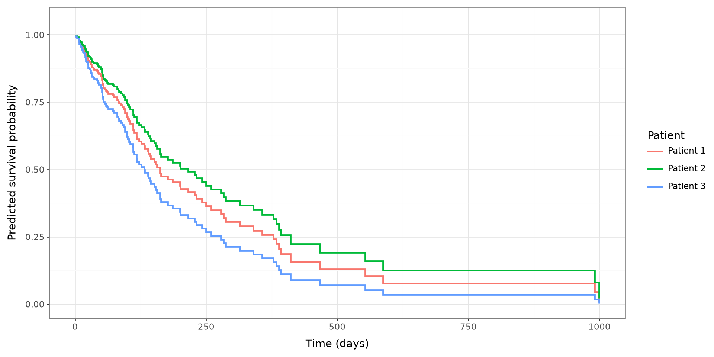

Survival Analysis
2026-11-17
Python Setup
Survival Analysis
Survival Analysis is a set of tools to analyze time-to-event data. This leads to the survival rate which models the time to percentage of data to observe the event.
- To determine the time until a percentile of the data achieves an event
- Determine which factors may affect the survival rate
Channel Island Birds
We are interested in how long do bird eggs hatch since being laid
Determine the hatch rate for each species
What happens when there is missing data?
How do we determine the survival rate?
Measure from first recording to event of interest
Construct a probability of surviving up to a certain time point
Data Type
Data is typically recorded as time-to-event data
For biomedical studies, researchers are interested in time from diagnosis to death, known as time-to-death
Survival Functions
Survival Functions
Censoring
Survival Fuction
Log-Rank Test
Cox Proportional Hazards Regression
Survival Analysis Functions
The survival analysis functions are a set of models used to model time-to-event data.
Survival Function
The survival function models the probability of observing the event after a certain time point.
\[ S(t) = 1 - F(t) = \int^\infty_t f(x) dx \]
Hazard Function
The hazard function is the probability of observing an event in the next moment, given you survived thus far.
\[ h(t) = \lim_{\Delta \rightarrow 0}\frac{P(t < X < t+\Delta|X = t)}{\Delta} \] ## Cumulative Hazard Function
The cumulative hazard function demonstrate how much hazard is accumulated after a certain amount of time.
\[ H(t) = \int^t_0 h(x) dx \]
Survival Functions
All the survival functions are mathematically equivalent to each other.
Censoring
Survival Functions
Censoring
Survival Fuction
Log-Rank Test
Cox Proportional Hazards Regression
Censoring
Censoring is a mechanism where we do not observe the true time-to-event
Not all the time is observed
Three common types of censoring mechanisms: Right, Left, and Interval
CI Birds Example
You design a study where you want to record the time it takes for an egg to hatch for different species of birds.
You spend a week monitoring different bird nests and record times when eggs are laid.
CI Birds Left Censoring
The day before the eggs hatched, your boat broke down and were not able to go to the islands for a week due to repairs.
During this time, 5 eggs hatched!
Left Censoring
dat = pd.DataFrame({
"ID": [str(value) for value in range(1, 11)],
"time": [7, 9, 10, 5, 5, 10, 5, 6, 6, 7],
"event_observed": [True, True, True, False, False,
True, False, True, True, True]
})
dat["event"] = np.where(
dat["event_observed"], "Hatched", "Left-censored"
)
(
ggplot(dat, aes(x="time", y="ID"))
+ geom_segment(aes(x=0, xend="time", yend="ID"), color="gray")
+ geom_point(aes(shape="event"), size=3, color="#0072B2")
+ geom_vline(xintercept=5, linetype="dashed")
+ scale_shape_manual(values={"Hatched": "o", "Left-censored": "s"})
+ labs(x="Weeks", y="Egg ID", shape="Event")
+ theme_bw()
)CI Birds Interval Censoring
As you been going out to the islands each day to record whether eggs have hatched or not, you can’t travel to the islands for the next few days due to stormy weather.
During this time, 8 eggs hatched!
Interval Censoring

dat = pd.DataFrame({
"ID": range(1, 7),
"lower_time": [7, 4, 9, 4.5, 4, 8],
"upper_time": [7, 6, 10, 4.5, 7, 8],
"interval_censored": [False, True, True, False, True, False]
}).sort_values("upper_time", ascending=False).reset_index(drop=True)
dat["ID"] = pd.Categorical(
dat["ID"].astype(str),
categories=dat["ID"].astype(str),
ordered=True
)
dat["event"] = np.where(
dat["interval_censored"], "Interval-censored", "Hatched"
)
dat["plot_time"] = np.where(
dat["interval_censored"],
(dat["lower_time"] + dat["upper_time"]) / 2,
dat["upper_time"]
)
interval_data = dat[dat["interval_censored"]]
(
ggplot(dat, aes(y="ID"))
+ geom_segment(aes(x=0, xend="lower_time", yend="ID"), color="gray")
+ geom_segment(
data=interval_data,
mapping=aes(x="lower_time", xend="upper_time", y="ID", yend="ID"),
inherit_aes=False,
color="gray",
linetype="dashed",
size=1
)
+ geom_point(aes(x="plot_time", shape="event"), size=3, color="#0072B2")
+ scale_shape_manual(values={"Hatched": "o", "Interval-censored": "s"})
+ labs(x="Weeks", y="Egg ID", shape="Event")
+ theme_bw()
)CI Birds Right Censoring
It is the end of the study, and their are 5 more eggs that have not hatched yet!
Additionally, a colleague has informed you that some eggs were eaten by reptiles through out the study. They obtained the day they were eaten or lost.
Right Censoring

dat = pd.DataFrame({
"ID": [str(value) for value in range(1, 11)],
"time": [7, 9, 10, 4, 2, 10, 8, 5, 6, 7],
"event_observed": [False, True, False, False, True,
False, False, True, False, True]
})
dat["event"] = np.where(
dat["event_observed"], "Hatched", "Right-censored"
)
(
ggplot(dat, aes(x="time", y="ID"))
+ geom_segment(aes(x=0, xend="time", yend="ID"), color="gray")
+ geom_point(aes(shape="event"), size=3, color="#0072B2")
+ geom_vline(xintercept=10, linetype="dashed")
+ scale_shape_manual(values={"Hatched": "o", "Right-censored": "s"})
+ labs(x="Weeks", y="Egg ID", shape="Event")
+ theme_bw()
)Censoring
Censoring affects the time-to-event information
However, we obtain some information when data is censored
Incorporate methods to utilize partial information
Censoring is independent of time-to-event generation
Survival Fuction
Survival Functions
Censoring
Survival Fuction
Log-Rank Test
Cox Proportional Hazards Regression
Survival Function
The survival curve will determine what is the probability of surviving up to a certain time
A survival curve accounts for both censored and uncensored data
A survival curve can be used to determine the median survival time of a disease
- Or the time for at least half of the eggs to hatch
Data Notation
Let \(\{t_j,d_j,R_j\}^D_{j=1}\) denote the survival data, where \(t_1<t_2<\cdots<t_D\) are the ordered distinct observed event times, \(d_j\) represents the number of events at time point \(t_j\), and \(R_j\) denotes the number of subjects still at risk of experiencing the event at \(t_j\).
Kaplan-Meier Estimator
\[ \hat{S}(t) =\left\{\begin{array}{cc} 1 & t=0 \\ \prod_{i:t_j \le t} \left( 1 - \frac{d_j}{R_j} \right) & t_j < t \end{array}\right. \]
Standard Error
\[ \widehat{SE}\{\hat S(t)\}=\sqrt{\hat S^2(t)\sum_{t_j\leq t}\frac{d_j}{R_j(R_j-d_j)}}. \]
Survival Curve

time, survival_probability = kaplan_meier_estimator(
y["Status"],
y["Survival_in_days"]
)
median_time = time[np.flatnonzero(survival_probability <= 0.5)[0]]
km_data = pd.DataFrame({
"time": time,
"survival_probability": survival_probability
})
(
ggplot(km_data, aes(x="time", y="survival_probability"))
+ geom_step(color="#0072B2", size=1)
+ annotate(
"segment", x=0, xend=median_time, y=0.5, yend=0.5,
color="gray", linetype="dashed"
)
+ annotate(
"segment", x=median_time, xend=median_time, y=0, yend=0.5,
color="gray", linetype="dashed"
)
+ coord_cartesian(ylim=(0, 1.05))
+ labs(x="Time (days)", y="Estimated survival probability")
+ theme_bw()
)VA Lung Example
We will use the Veterans’ Administration Lung Cancer Trial data included with scikit-survival. The event of interest is death, and Treatment identifies the treatment group.
| Treatment | Survival_in_days | Status | |
|---|---|---|---|
| 0 | standard | 72.0 | True |
| 1 | standard | 411.0 | True |
| 2 | standard | 228.0 | True |
| 3 | standard | 126.0 | True |
| 4 | standard | 118.0 | True |
Kaplan–Meier Template
The scikit-survival package contains the necessary functions to estimate a survival curve:
Surv: Creates a structured survival outcomekaplan_meier_estimator: Estimates the survival function
- 1
-
eventmust be Boolean:Truemeans the event occurred. - 2
- Creates a survival outcome containing the censoring mechanism and time to event.
- 3
- The function returns the event times and estimated survival probabilities.
Plotting the Survival Function
scikit-survival calculates the curve, and plotnine displays it:
kaplan_meier_estimator: Returns event times and survival probabilitiesgeom_step: Draws the Kaplan–Meier step functiongeom_ribbon: Draws pointwise confidence intervals
time, survival_probability, confidence_interval = kaplan_meier_estimator(
outcome["event"],
outcome["time"],
conf_type="log-log"
)
median_time = time[np.flatnonzero(survival_probability <= 0.5)[0]]
km_data = pd.DataFrame({
"time": time,
"survival_probability": survival_probability,
"lower": confidence_interval[0],
"upper": confidence_interval[1]
})
(
ggplot(km_data, aes(x="time", y="survival_probability"))
+ geom_ribbon(aes(ymin="lower", ymax="upper"), alpha=0.25)
+ geom_step(size=1)
+ geom_hline(yintercept=0.5, linetype="dashed", color="gray")
+ coord_cartesian(ylim=(0, 1.05))
+ labs(x="Time", y="Estimated survival probability")
+ theme_bw()
)Fitting Curve By Groups
To compare groups, subset the outcome for each group and estimate a separate Kaplan–Meier curve.
curves = []
for group_name in data["group"].unique():
mask = (data["group"] == group_name).to_numpy()
time, survival_probability = kaplan_meier_estimator(
outcome["event"][mask],
outcome["time"][mask]
)
curves.append(pd.DataFrame({
"time": time,
"survival_probability": survival_probability,
"group": group_name
}))
grouped_km_data = pd.concat(curves, ignore_index=True)
(
ggplot(
grouped_km_data,
aes(x="time", y="survival_probability", color="group")
)
+ geom_step(size=1)
+ coord_cartesian(ylim=(0, 1.05))
+ labs(x="Time", y="Estimated survival probability", color="Group")
+ theme_bw()
)Combine each group’s returned survival probabilities into one data frame and map the group variable to color in plotnine.
Veterans’ Survival Curve
- Fit a survival curve using
load_veterans_lung_cancer. Survival_in_days: time-to-death or censoringStatus: event indicator (Truemeans death was observed)- Plot the survival curve and add a line indicating the 50th percentile

time, survival_probability = kaplan_meier_estimator(
y["Status"], y["Survival_in_days"]
)
median_time = time[np.flatnonzero(survival_probability <= 0.5)[0]]
km_data = pd.DataFrame({
"time": time,
"survival_probability": survival_probability
})
(
ggplot(km_data, aes(x="time", y="survival_probability"))
+ geom_step(color="#0072B2", size=1)
+ annotate(
"segment", x=0, xend=median_time, y=0.5, yend=0.5,
color="gray", linetype="dashed"
)
+ annotate(
"segment", x=median_time, xend=median_time, y=0, yend=0.5,
color="gray", linetype="dashed"
)
+ coord_cartesian(ylim=(0, 1.05))
+ labs(x="Time (days)", y="Estimated survival probability")
+ theme_bw()
)Survival Curve by Treatment
- Fit survival curves stratified by treatment group.
Survival_in_days: time-to-death or censoringStatus: event indicatorTreatment: treatment group- Plot each survival curve and add a line indicating the 50th percentile

curves = []
for treatment in X["Treatment"].unique():
mask = (X["Treatment"] == treatment).to_numpy()
time, survival_probability = kaplan_meier_estimator(
y["Status"][mask],
y["Survival_in_days"][mask]
)
curves.append(pd.DataFrame({
"time": time,
"survival_probability": survival_probability,
"Treatment": str(treatment)
}))
treatment_km_data = pd.concat(curves, ignore_index=True)
(
ggplot(
treatment_km_data,
aes(x="time", y="survival_probability", color="Treatment")
)
+ geom_step(size=1)
+ geom_hline(yintercept=0.5, color="gray", linetype="dashed")
+ scale_color_manual(values=["#0072B2", "#D55E00"])
+ coord_cartesian(ylim=(0, 1.05))
+ labs(x="Time (days)", y="Estimated survival probability")
+ theme_bw()
)Log-Rank Test
Survival Functions
Censoring
Survival Fuction
Log-Rank Test
Cox Proportional Hazards Regression
Hypothesis Testing
- The treatment curves may differ because of a real treatment effect or random variation.
- Confidence intervals show the uncertainty around each estimated curve.
- A log-rank test can formally compare the survival functions.
Log-Rank Test
The log-rank test compares the entire survival experience of two or more independent groups.
- \(H_0\): The groups have the same survival function.
- \(H_A\): At least one group has a different survival function.
- A small p-value provides evidence against \(H_0\).
Log-Rank Test Template
Veterans’ Log-Rank Test
Chi-square statistic: 0.008
p-value: 0.9277| counts | observed | expected | statistic | |
|---|---|---|---|---|
| group | ||||
| standard | 69 | 64 | 64.500197 | -0.500197 |
| test | 68 | 64 | 63.499803 | 0.500197 |
Survival Curves with Confidence Intervals
Add confidence intervals to the previous plot.

curves = []
for treatment in X["Treatment"].unique():
mask = (X["Treatment"] == treatment).to_numpy()
time, survival_probability, confidence_interval = kaplan_meier_estimator(
y["Status"][mask],
y["Survival_in_days"][mask],
conf_type="log-log"
)
curves.append(pd.DataFrame({
"time": time,
"survival_probability": survival_probability,
"lower": confidence_interval[0],
"upper": confidence_interval[1],
"Treatment": str(treatment)
}))
treatment_ci_data = pd.concat(curves, ignore_index=True)
(
ggplot(
treatment_ci_data,
aes(
x="time",
y="survival_probability",
color="Treatment",
group="Treatment"
)
)
+ geom_ribbon(aes(ymin="lower", ymax="upper", fill="Treatment"), alpha=0.2)
+ geom_step(size=1)
+ geom_hline(yintercept=0.5, color="gray", linetype="dashed")
+ scale_color_manual(values=["#0072B2", "#D55E00"])
+ scale_fill_manual(values=["#0072B2", "#D55E00"])
+ coord_cartesian(ylim=(0, 1.05))
+ labs(x="Time (days)", y="Estimated survival probability")
+ theme_bw()
)Cox Proportional Hazards Regression
Survival Functions
Censoring
Survival Fuction
Log-Rank Test
Cox Proportional Hazards Regression
Why Use Cox Regression?
Kaplan–Meier curves and log-rank tests compare groups one variable at a time. Cox regression estimates how several predictors are associated with the event rate while accounting for censoring.
- The outcome remains a time and an event indicator.
- Predictors may be numerical or categorical.
- The model estimates a coefficient and hazard ratio for each predictor.
Cox Proportional Hazards Model
\[ h(t \mid \mathbf{x}) = h_0(t)\exp\left(\boldsymbol{\beta}^{\mathsf{T}}\mathbf{x}\right) \]
- \(h_0(t)\) is the baseline hazard function.
- \(\boldsymbol{\beta}\) contains the estimated regression coefficients.
- \(\exp(\beta_j)\) is the hazard ratio associated with a one-unit increase in predictor \(x_j\), holding the other predictors constant.
Prepare the Predictor Matrix
CoxPHSurvivalAnalysis requires a numerical predictor matrix. Use OneHotEncoder to convert the categorical variables into indicator columns.
| Age_in_years | Celltype=large | Celltype=smallcell | Celltype=squamous | Karnofsky_score | Months_from_Diagnosis | Prior_therapy=yes | Treatment=test | |
|---|---|---|---|---|---|---|---|---|
| 0 | 69.0 | 0.0 | 0.0 | 1.0 | 60.0 | 7.0 | 0.0 | 0.0 |
| 1 | 64.0 | 0.0 | 0.0 | 1.0 | 70.0 | 5.0 | 1.0 | 0.0 |
| 2 | 38.0 | 0.0 | 0.0 | 1.0 | 60.0 | 3.0 | 0.0 | 0.0 |
| 3 | 63.0 | 0.0 | 0.0 | 1.0 | 60.0 | 9.0 | 1.0 | 0.0 |
| 4 | 65.0 | 0.0 | 0.0 | 1.0 | 70.0 | 11.0 | 1.0 | 0.0 |
Fit a Cox Regression Model
CoxPHSurvivalAnalysis()In a Jupyter environment, please rerun this cell to show the HTML representation or trust the notebook.
On GitHub, the HTML representation is unable to render, please try loading this page with nbviewer.org.
Parameters
| alpha | 0 | |
| ties | 'breslow' | |
| n_iter | 100 | |
| tol | 1e-09 | |
| verbose | 0 |
Fitted attributes
| Name | Type | Value |
|---|---|---|
| baseline_survival_ | StepFunction | StepFunction(... a=1.0, b=0.0) |
| coef_ | ndarray[float64](8,) | [-0.01,-0.79,-0.33,...,-0. , 0.07, 0.29] |
| cum_baseline_hazard_ | StepFunction | StepFunction(... a=1.0, b=0.0) |
| feature_names_in_ | ndarray[object](8,) | ['Age_in_years','Celltype=large','Celltype=smallcell',..., 'Months_from_Diagnosis','Prior_therapy=yes','Treatment=test'] |
| n_features_in_ | int | 8 |
| unique_times_ | ndarray[float64](101,) | [ 1., 2., 3.,...,587.,991.,999.] |
Cox Regression Template
Coefficients and Hazard Ratios
| variable | coefficient | hazard_ratio | |
|---|---|---|---|
| 3 | Celltype=squamous | -1.188 | 0.305 |
| 1 | Celltype=large | -0.789 | 0.454 |
| 2 | Celltype=smallcell | -0.332 | 0.718 |
| 4 | Karnofsky_score | -0.033 | 0.968 |
| 0 | Age_in_years | -0.009 | 0.991 |
| 5 | Months_from_Diagnosis | -0.000 | 1.000 |
| 6 | Prior_therapy=yes | 0.072 | 1.075 |
| 7 | Treatment=test | 0.290 | 1.336 |
Plot the Hazard Ratios

Interpret a Hazard Ratio
- Hazard ratio greater than 1: the event rate increases as the predictor increases.
- Hazard ratio less than 1: the event rate decreases as the predictor increases.
- Hazard ratio equal to 1: no estimated association with the event rate.
- For categorical predictors, interpretation is relative to the omitted reference category.
Predicted Survival Curves

survival_functions = cox_model.predict_survival_function(
X_encoded.iloc[:3]
)
prediction_frames = []
for patient_number, survival_function in enumerate(
survival_functions,
start=1
):
prediction_frames.append(pd.DataFrame({
"time": survival_function.x,
"survival_probability": survival_function(survival_function.x),
"Patient": f"Patient {patient_number}"
}))
prediction_data = pd.concat(prediction_frames, ignore_index=True)
(
ggplot(
prediction_data,
aes(x="time", y="survival_probability", color="Patient")
)
+ geom_step(size=1)
+ coord_cartesian(ylim=(0, 1.05))
+ labs(x="Time (days)", y="Predicted survival probability")
+ theme_bw()
)Concordance Index
The concordance index measures whether patients with higher predicted risk tend to experience the event sooner.
Concordance index: 0.736- A value of 0.5 is approximately random ordering.
- A value of 1 indicates perfect ordering of observed outcomes.
- Evaluate performance on test data when assessing predictive accuracy.